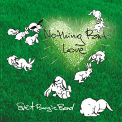

Nothing But Love (август 2005)

1. Miriam Boogie (instr)
2. Nothing But Love
3. Look what U Get, Girl
4. Do You Feel It, Like I Feel It
5. Happy With the Boogie
6. Anna, Why Are You Cryin' Tonight
7. From Sea To Sea
8. Little Tia
9. Let's Booie
10. Tverskaya 19 Stomp (instr)
11.Why. Oh Why (vocal - Big Val)
|
Live At JVL Art Club (январь 2005)

1. How Blue Can U Get?
2. Baby, What U Want Me To Do?
3. Big Fat Mama
4. It Hurts Me Too
5. Love My Baby
6.Trouble In Mind
7. Little Tia
8. Poodle Boogie
9. Darlin' You Know I Love You
10. For U My Love
11. Let Me Show You
12. Anna Lee
13. Everything's Gonna Be Allright
14. Rockin' The House
15. Shake A Hand
16. How Many More Years
|
Live At JVL Art Club (октябрь 2003)

1. How Blue Can U Get?
2. Baby, What U Want Me To Do?
3. Big Fat Mama
4. It Hurts Me Too
5. Little Tia
6. Love My Baby
7.
Hey Hey Blues
8. Let me Show U
9. Poodle Boogie
|